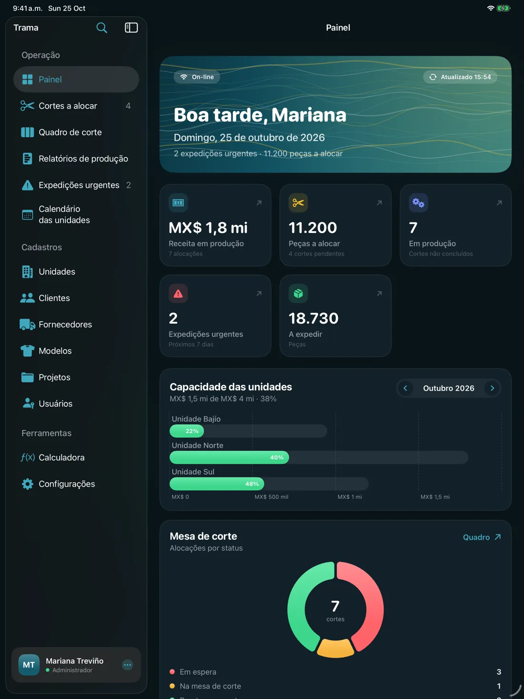
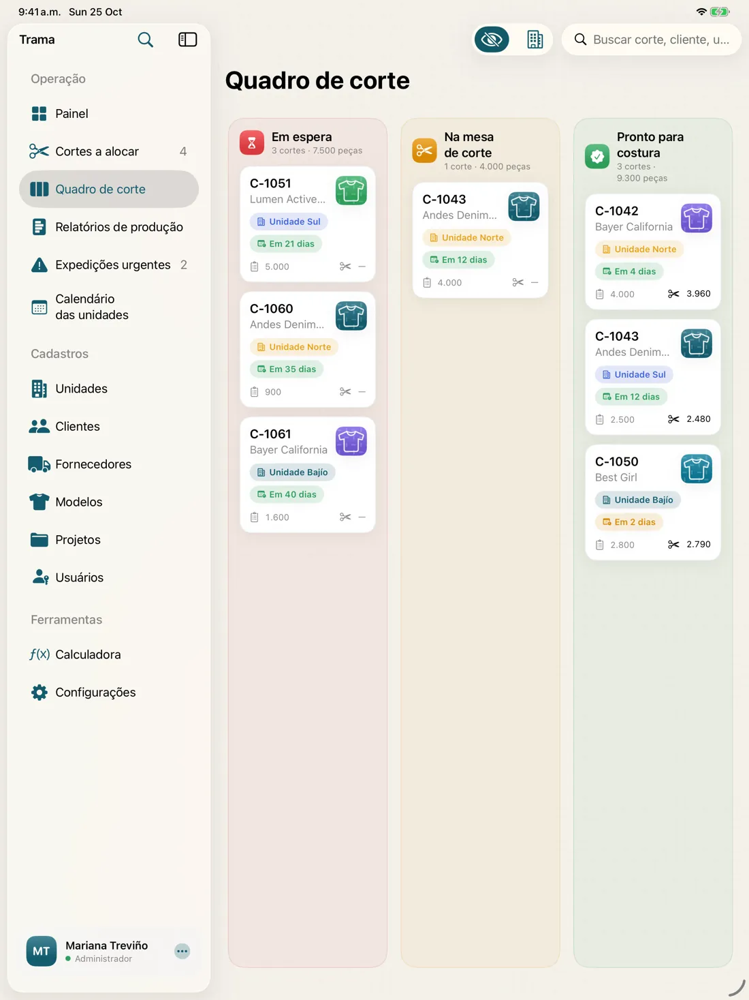
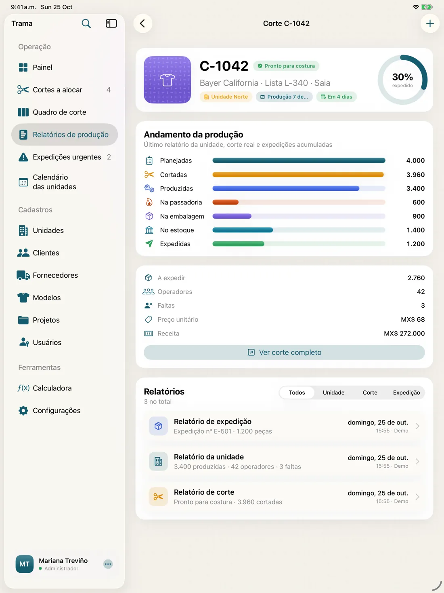
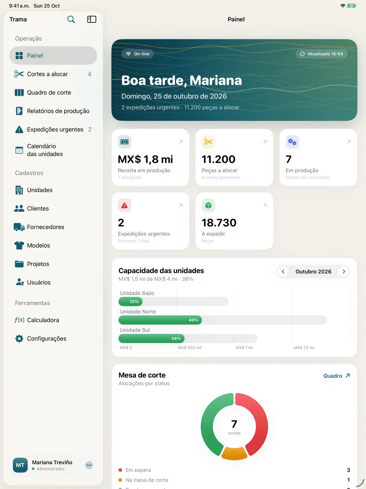

Facções de costura
Distribua os cortes de cada cliente entre as suas unidades sem estourar a capacidade e entregue no prazo.
Para confecções e facções · iPad, Android e Web
Trama é o sistema para confecção que conecta corte, unidades e expedição em um só painel. Distribua a produção pela capacidade, acompanhe cada peça da mesa de corte ao estoque e saiba o que é urgente antes que vire problema.

Nasceu no chão de fábrica da Industrial Peña Balles, uma confecção mexicana com várias unidades: anos de cortes, produção e entregas reais transformados em uma ferramenta que qualquer confecção pode usar.
O que é o Trama
Trama é um software de controle de produção de confecção para fábricas de roupas e facções. Ele registra as ordens de corte (lista, peça, modelo, cliente, quantidade e preço), distribui entre as suas unidades conforme a capacidade mensal, acompanha cada corte pela mesa de corte, costura, passadoria, embalagem, estoque e expedição, e avisa sobre as entregas urgentes. O app para iPad e Android funciona sem internet; a versão Web leva o Trama a qualquer computador do escritório.
Para quem é
Distribua os cortes de cada cliente entre as suas unidades sem estourar a capacidade e entregue no prazo.
Controle a produção por unidade: costureiras, faltas, peças produzidas, passadoria, embalagem e estoque.
Acompanhe cada ordem de corte na mesa e compare a quantidade real cortada com a planejada.
Veja em um painel o que está em produção, o que falta expedir e qual entrega está em risco.
Produto
Pensado para tablet: rápido de usar com uma mão no chão de fábrica, com todos os detalhes no escritório.
Cada unidade tem uma capacidade mensal. Na hora de distribuir, o Trama mostra em tempo real quanto o corte ocupa em cada unidade naquele mês: se cabe, se ultrapassa e qual tem mais espaço.
Aguardando, na mesa de corte, pronto para costura. Um quadro visual que o gerente de corte atualiza com o dedo.

Apontamentos de unidade, de corte e de expedição alimentam um funil por corte: cortadas, costuradas, passadas, embaladas, em estoque e expedidas.

O que vence em breve ou já venceu, com as peças a expedir e registro de expedição em um toque.
Inícios de produção e entregas aos clientes no mês, com a capacidade de cada unidade.
Meta diária, dias e meses estimados, preço por minuto e receita líquida enquanto você digita.
Clientes e fornecedores com contatos ilimitados, galeria de modelos com foto, projetos e orçamentos.
Tour

Offline
Com o app, seus dados ficam no iPad ou no tablet Android, em um banco de dados local. Sem servidor fora do ar, sem tela de carregamento e sem depender do sinal no galpão.
App ou Web
O app nativo para iPad e Android continua funcionando mesmo sem sinal no galpão. A versão Web coloca o Trama em qualquer computador, sem instalar nada. Os planos Planta, Multiplanta e Empresa incluem os dois.
| Recurso | AppiPad e Android · para o chão de fábrica | WebNavegador · para o escritório e a diretoria |
|---|---|---|
| Funciona sem internet | Sim. Banco de dados no aparelho | Não. Precisa de conexão |
| Se a rede cair | Sim. Ninguém para | Não. Pausa até reconectar |
| Sincronização | Sim. Automática quando a conexão volta | Sim. Sempre on-line |
| Velocidade | Sim. Instantânea, sem tela de carregamento | Em parte. Depende da sua conexão |
| Câmera para fotos dos modelos | Sim. Tire a foto pelo tablet | Em parte. Envie arquivos do computador |
| Sem instalação | Não. Distribuição privada nos seus aparelhos | Sim. Abra o navegador e entre |
| Em qualquer computador | Não. iPad, tablets e celulares Android | Sim. Windows, Mac ou Linux |
| Ideal para | Gerentes de corte, unidade e expedição | Administrativo, comercial e diretoria |
| Preço | A partir de US$ 99/mês, com Web incluída | A partir de US$ 49/mês |
O melhor? Você não precisa escolher. Os planos Planta, Multiplanta e Empresa incluem o app e a versão Web, com os mesmos dados.
Preços →Perfis
Tudo: painel, distribuição, cadastros, usuários e financeiro.
Distribui os cortes, movimenta o quadro e aponta o corte real.
Só a sua unidade: costureiras, faltas, produzidas, passadoria, embalagem e estoque.
Entregas urgentes e registro de cada expedição com o seu número.
Preços
Escolha o plano que combina com a sua confecção. Valores em dólares americanos (US$) por mês, mais impostos.
Para começar pelo escritório
US$49US$41 /mês + impostos
Cobrança mensalUS$ 490 por ano
Para uma unidade e o escritório
US$99US$83 /mês + impostos
Cobrança mensalUS$ 990 por ano
Para confecções com várias unidades
US$249US$208 /mês + impostos
Cobrança mensalUS$ 2.490 por ano
Para grupos e grandes operações
A partir de US$590US$492 /mês + impostos
Cobrança mensalUS$ 5.900 por ano
Um preço por empresa, não por usuário. Cada plano já inclui a sua equipe, então adicionar um gerente não custa nada a mais.
Licenças
Os apps do Trama não estão nas lojas públicas. Cada empresa recebe uma licença privada, uma instalação gerenciada nos seus aparelhos e acompanhamento de verdade.
Escolha um plano ou conte quantas unidades e usuários você tem.
Mostramos o Trama com dados parecidos com os da sua confecção.
Preço publicado e tudo por escrito, sem custos escondidos.
Apps: distribuição privada nos seus iPads e Android, sem download público. Plano Web: acesso com usuário e senha.
Migração de dados, treinamento por perfil e suporte contínuo, conforme o plano.
Dúvidas
O plano Web custa US$ 49 por mês, Planta US$ 99, Multiplanta US$ 249 e Empresa a partir de US$ 590, mais impostos. No pagamento anual, você ganha 2 meses grátis. O preço é por empresa, não por usuário.
O app para iPad e Android guarda os dados no aparelho, então funciona sem internet, é mais rápido e usa a câmera para as fotos dos modelos. A versão Web não precisa de instalação e roda em qualquer computador, mas exige conexão. Os planos Planta, Multiplanta e Empresa incluem os dois.
Não. Os apps são distribuídos de forma privada para as empresas licenciadas, assim você controla quais aparelhos têm o app e ninguém de fora da empresa consegue instalar. A versão Web é acessada com usuário e senha.
Com o app, não: login, cortes, apontamentos, cadastros e gráficos funcionam offline, e tudo sincroniza quando a internet volta. A versão Web precisa de conexão.
Sim. Existe um app nativo para tablets e celulares com Android 8.0 ou superior, com as mesmas regras e o mesmo formato de backup do app para iPad.
No app, em um banco de dados local em cada aparelho, com backup automático. Você também pode exportar backups completos quando quiser e restaurá-los em outro iPad ou Android.
Sim. A migração está incluída nos planos Multiplanta e Empresa: importamos unidades, clientes, fornecedores, modelos, cortes e apontamentos. Avaliamos cada caso na demonstração.
É um sistema para planejar e acompanhar a fabricação de roupas: quais cortes existem, em qual unidade estão sendo produzidos, quanto já andou cada um e quando será expedido. O Trama faz isso no tablet, sem internet e com um perfil para cada gerente.
Sim. O Trama nasceu em uma confecção com várias unidades: distribui os cortes pela capacidade mensal de cada unidade, registra a produção diária e prioriza as entregas urgentes pela data combinada com o cliente.
Contato
Deixe seus dados e entraremos em contato para agendar uma demonstração com informações parecidas com as da sua confecção.